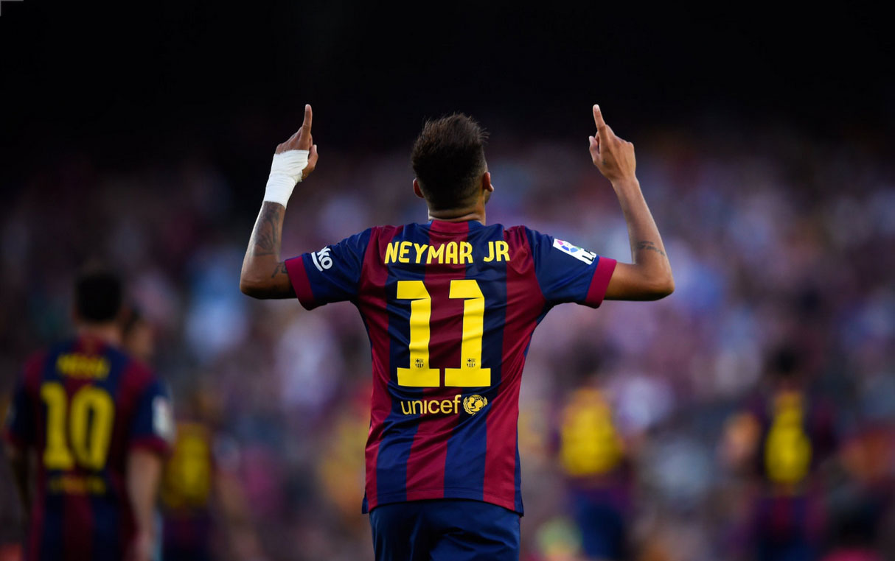

Wikipedia
Neymar is one of only five players to have scored 100 goals with three different clubs,[α] both the all-time Brazilian top goalscorer (43) and assist provider (33) in the UEFA Champions League, ranks second for the all-time South American men's top goalscorers in international football (80), and was formerly the all-time top assist provider in international football (59).[β] In 2015 and 2017, Neymar finished third in the Ballon d'Or.
Neymar made his professional debut with Santos in 2009. He soon emerged as a teenage sensation and helped Santos end a 48-year drought to win the 2011 Copa Libertadores, where he was named Best Player, before scoring 43 goals in just 47 matches and finishing as the Copa Libertadores top scorer in the 2012 season. In 2013, Barcelona signed Neymar and he soon became part of a dominant attacking trio with Messi and Luis Suárez dubbed MSN. In 2014–15, Neymar had one of the most prolific seasons ever for a winger, scoring 39 goals. Barcelona won the treble, with Neymar being the top goalscorer of both the Champions League and Copa del Rey.[γ] In 2015–16, he helped his club win the double and the FIFA Club World Cup.
WikipediaYoutube